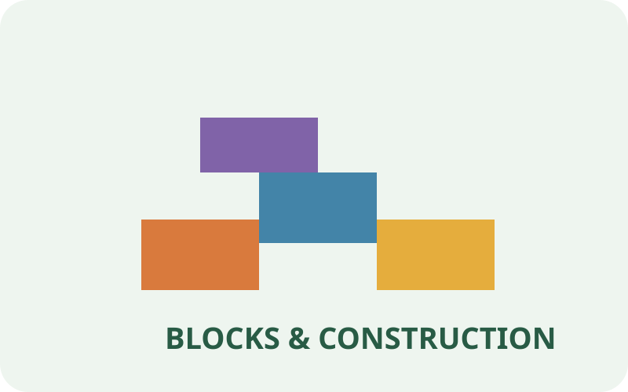
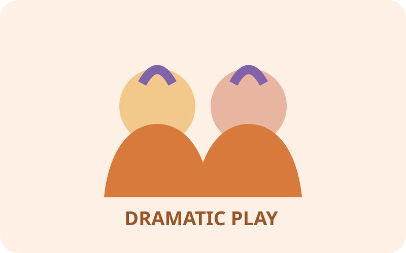
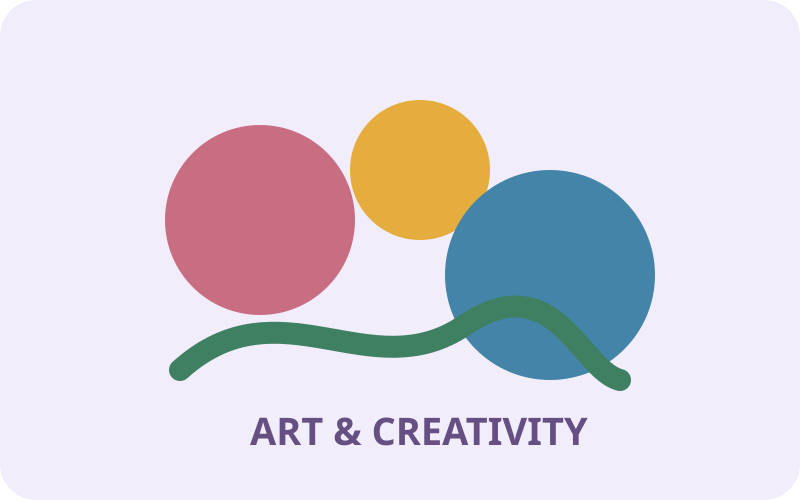
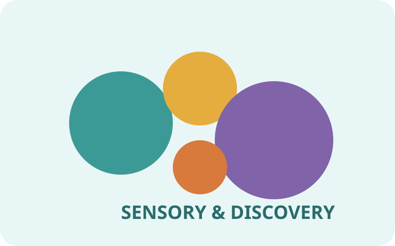
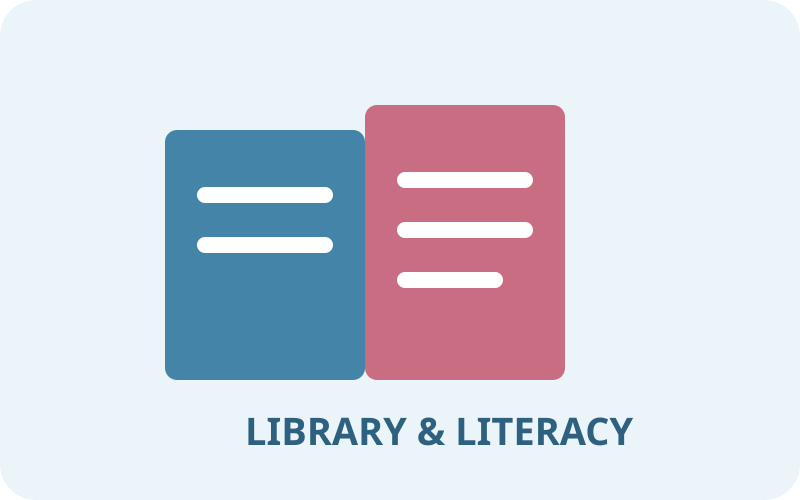
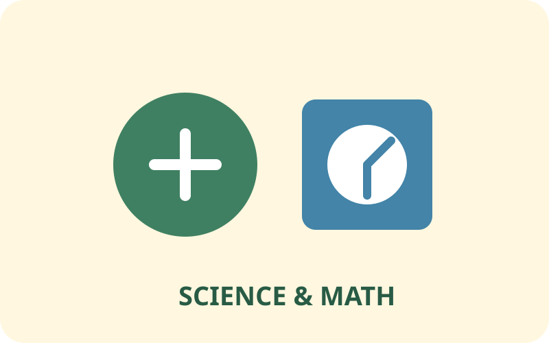

🧱 Blocks & Construction
Support spatial reasoning, balance, measurement, design, collaboration, and problem solving through building.
Explore Blocks →Plan purposeful classroom centers that invite children to play, investigate, communicate, create, build, and make meaning through hands-on experiences.
Each collection provides practical ideas for materials, experiences, teacher support, observation, and intentional learning.

Support spatial reasoning, balance, measurement, design, collaboration, and problem solving through building.
Explore Blocks →
Encourage imagination, language, social interaction, role play, and connections to children's real world experiences.
Explore Dramatic Play →
Offer open ended materials and experiences that support creative expression, exploration, choice, and process focused art.
Explore Art →
Invite children to explore textures, materials, properties, movement, cause and effect, and sensory experiences.
Explore Sensory →
Build language, book knowledge, storytelling, print awareness, writing, mark making, and joyful reading experiences.
Explore Literacy →
Encourage counting, sorting, patterns, measurement, observation, prediction, investigation, and mathematical thinking.
Explore Science & Math →Learning centers become powerful when teachers observe children's interests, plan intentional materials, and document the learning that happens through play.
Notice children's choices, interactions, strategies, questions, and emerging skills.
Assessment Center →Use observations and interests to intentionally prepare materials and experiences.
Lesson Plan Library →Find printable tools and classroom resources that strengthen center experiences.
Printable Library →